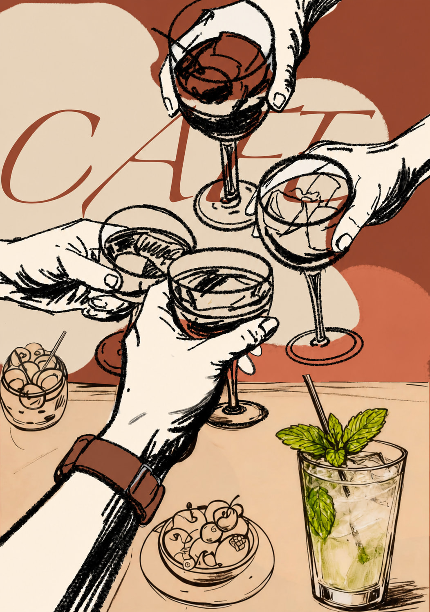
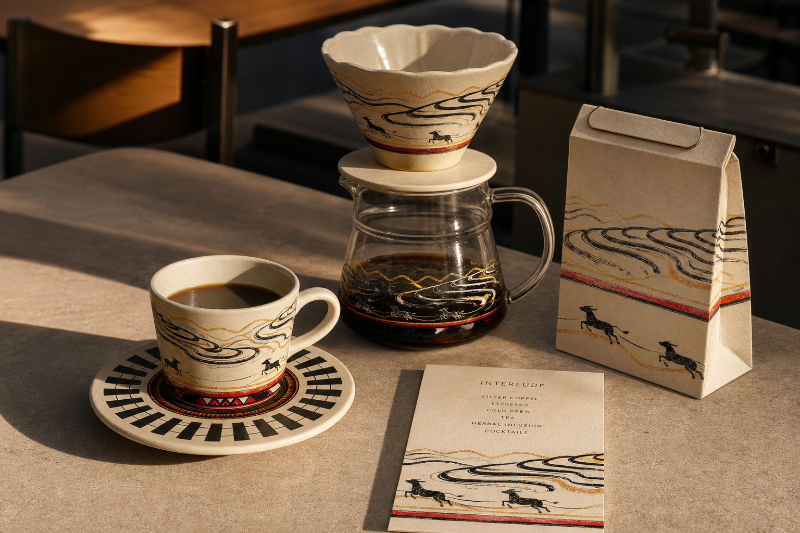
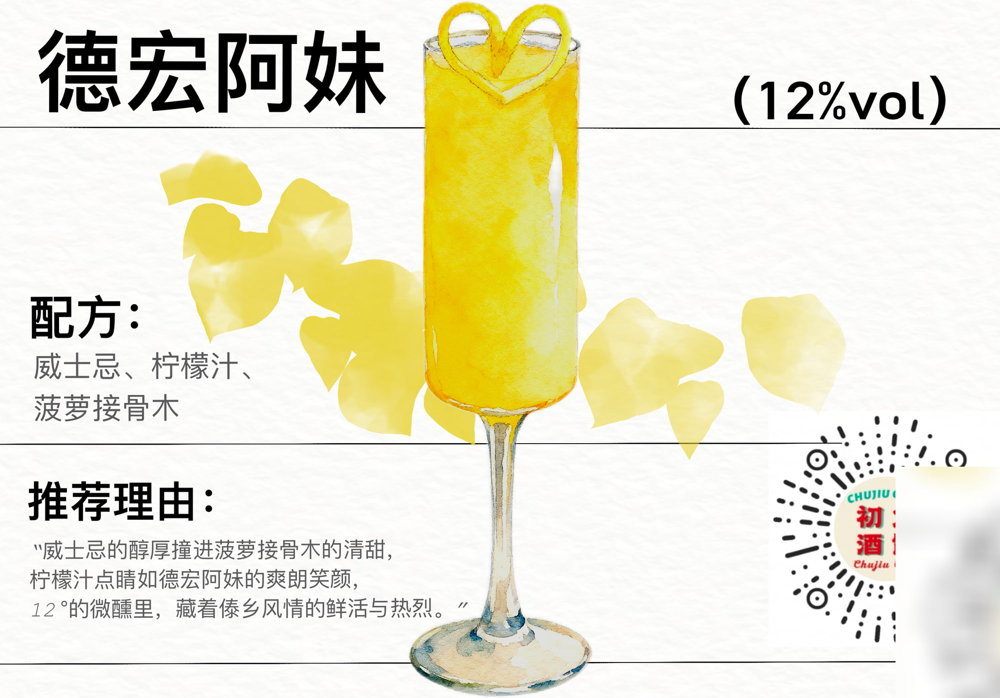

咖啡与酒吧 · 委托项目
间奏
白天是咖啡馆，夜里是小酒馆，用同一套视觉。
我们为一家咖啡酒吧设计了插画、器具图形、包装和手机点单界面，从早上的咖啡一直用到晚上的酒。
本案例以代称「间奏（INTERLUDE）」展示，已隐去原品牌信息和二维码。视觉与插画由北窗光完成。
问题
一个空间，两种节奏。
这家店白天卖咖啡，晚上卖酒。它需要一套白天轻松、入夜依然温暖的视觉，从杯子一直延续到手机上。

思路举杯定格，
间
奏
定格一次举杯
举杯定格，
记住每一次相聚。
我们把一次碰杯画成核心插画，用手绘线条和暖色，让气氛轻松、有人情味。
温暖而简短的配色
暖象牙白、陶土红和墨黑是主色，市集黄和深绿做点缀。流动的线条、动物和圆环图案在器具、包装和屏幕卡片上反复出现。

暖象牙白#F1DFBD
陶土红#9F442C
深绿#0A695C
市集黄#F4B814
手绘 / 触感 / 亲和 / 温暖
从平面图形到真实器物
杯子用流动线条，杯碟突出圆环图形，纸袋和菜单减少图案密度。我们用应用效果图检查材质、比例和店内灯光下的效果。

把店里的语言带到手机上
点单页延续品牌色和线框卡片，不换成通用模板，堂食、自取和会员一眼就能分清。路径很简单：吸引、选择、下单。
间奏咖啡 · 酒馆
你好
欢迎开启今日的间奏
欢迎开启今日的间奏
堂食○
自提□
首页点单订单我的
手机点单首页
主视觉营造氛围，卡片承载操作，品牌色引导视线。
吸引→选择→下单
每杯酒都有自己的故事
酒单卡按名称、酒精度、配方和推荐理由排列。一句短标语「Filter the rush, extract the life.」（滤去匆忙，萃取生活）用于橱窗、海报和点单页。

从白昼到夜晚
「Filter the rush,
extract the life.」
成果
一个品牌，
两种节奏。
同一套视觉规则贯穿插画、器具、包装和手机点单，从一天的第一杯咖啡，到夜里的最后一杯酒。其中部分已在店内使用。
查看全部作品 ↗